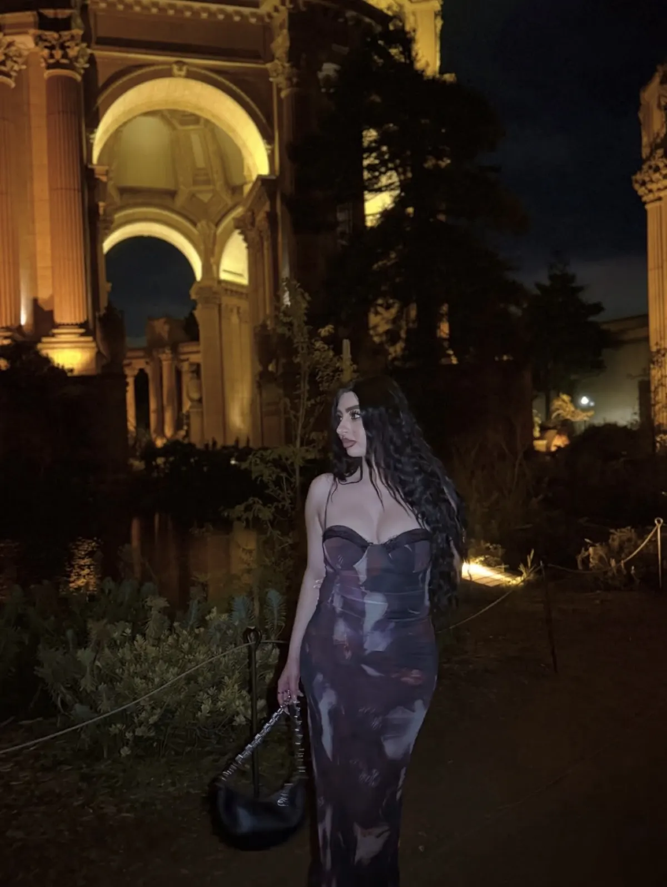

Fashion & location looks
Styled looks set against the places that make them — including “one piece, three ways.”
San Francisco · @velvetfyxx
Model · Actress · Creative Director
I · Hotel stays
Hilton Garden Inn — hosted stays, styled for the evening.
II · Dining nights
Fogão Gaúcho — tables worth dressing for.
III · Fashion looks
Billy Roy’s — polished looks, cinematic light.
IV · City landmarks
Gusto al Gusto — colour, texture, the city as set.
Select collaborations
Hilton · Fogão Gaúcho · Billy Roy’s · Gusto · Sushi Tsunami · Mrs. Ramen · Frymazing
Partnerships by inquiry
Commissioned partnerships, hosted stays and curated gifting — by invitation.

San Francisco · @velvetfyxx
Model · Actress · Creative Director
Glam lifestyle, hotels, dining & San Francisco nights.
Hilton Garden Inn, Fogão Gaúcho, Sushi Tsunami, Billy Roy’s, Gusto al Gusto, Mrs. Ramen, Frymazing
I. Selected features
II. Meet Maria
Hotel stays, dining nights and city landmarks — turned into polished, aesthetic stories.
Maria Marron is a model, actress and creative director based in San Francisco. Concept, styling, performance and edit come from one point of view — so your brand gets a finished story, not just a post.
Her world →III. After dark
“Polished, aesthetic stories that feel like an evening out.”
IV. Content pillars
Styled looks set against the places that make them — including “one piece, three ways.”
Check-in to last course, filmed as an elevated evening your guests want to recreate.
City nights and iconic landmarks, captured with a cinematic eye.
15–30s narrated pieces that give your venue a voice — and a reason to stay to the end.
Hotels · Restaurants · Beauty · Fashion · Lifestyle
Partnerships by inquiry. Rates available upon request.
Inquire